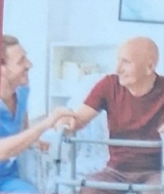

P&A Health Services brings together home care, behavioral wellness, faith-based counseling, non-invasive pain support and public health services — so you and your family can live healthier, fuller lives.
Compassionate Care Today, A Healthier Tomorrow.One trusted team for the many sides of health — physical, emotional, spiritual and community.
Health is more than one diagnosis. We look at how your body, mind, faith, family and community all work together — and build support around all of it.
Small changes make a big difference for an older adult who wants to stay at home safely.
Read more →Looking after someone you love is meaningful work — and it can be exhausting. Here is how to keep your own cup full.
Read more →
Chronic pain touches every part of life. These everyday habits can complement the care plan from your healthcare provider.
Read more →From our office in Linthicum Heights, we serve families across Anne Arundel County and surrounding Maryland communities.
Call 832-985-0427 or 410-841-8149 for a free consultation.